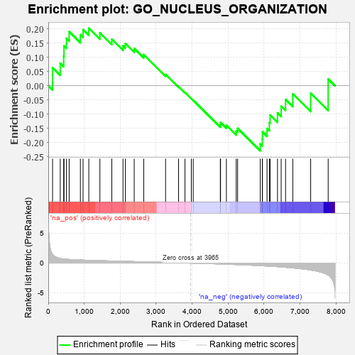
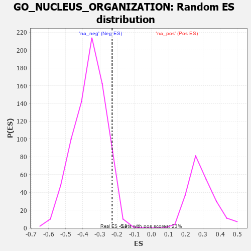

| | | Dataset | 7d |
| Phenotype | NoPhenotypeAvailable |
| Upregulated in class | na_neg |
| GeneSet | GO_NUCLEUS_ORGANIZATION |
| Enrichment Score (ES) | -0.22924209 |
| Normalized Enrichment Score (NES) | -0.63686574 |
| Nominal p-value | 0.9380645 |
| FDR q-value | 0.99943376 |
| FWER p-Value | 1.0 |
Table: GSEA Results Summary

Fig 1: Enrichment plot: GO_NUCLEUS_ORGANIZATION
Profile of the Running ES Score & Positions of GeneSet Members on the Rank Ordered List
| PROBE | GENE SYMBOL | GENE_TITLE | RANK IN GENE LIST | RANK METRIC SCORE | RUNNING ES | CORE ENRICHMENT | | 1 | SUN3 | | | 119 | 1.426 | 0.0640 | No |
| 2 | WEE2 | | | 333 | 0.766 | 0.0796 | No |
| 3 | CCNB2 | | | 429 | 0.672 | 0.1048 | No |
| 4 | RRN3 | | | 438 | 0.667 | 0.1407 | No |
| 5 | NUP54 | | | 505 | 0.627 | 0.1672 | No |
| 6 | CCNB1 | | | 581 | 0.601 | 0.1910 | No |
| 7 | HMGB2 | | | 892 | 0.507 | 0.1800 | No |
| 8 | ZPR1 | | | 967 | 0.491 | 0.1979 | No |
| 9 | NUP93 | | | 1127 | 0.459 | 0.2032 | No |
| 10 | CHMP7 | | | 1435 | 0.403 | 0.1868 | No |
| 11 | VRK1 | | | 1766 | 0.343 | 0.1642 | No |
| 12 | KDM3A | | | 2078 | 0.294 | 0.1413 | No |
| 13 | PSME4 | | | 2143 | 0.285 | 0.1490 | No |
| 14 | HIPK2 | | | 2389 | 0.247 | 0.1318 | No |
| 15 | VPS4A | | | 2654 | 0.205 | 0.1099 | No |
| 16 | NUP98 | | | 3261 | 0.112 | 0.0398 | No |
| 17 | NOLC1 | | | 3623 | 0.056 | -0.0026 | No |
| 18 | SPAST | | | 3801 | 0.027 | -0.0234 | No |
| 19 | CHMP6 | | | 3977 | -0.003 | -0.0453 | No |
| 20 | TOR1A | | | 4030 | -0.013 | -0.0512 | No |
| 21 | RTN4 | | | 4783 | -0.154 | -0.1374 | No |
| 22 | SRPK2 | | | 4790 | -0.155 | -0.1295 | No |
| 23 | CHMP5 | | | 4952 | -0.188 | -0.1394 | No |
| 24 | TMF1 | | | 5225 | -0.251 | -0.1598 | No |
| 25 | CDK1 | | | 5264 | -0.262 | -0.1501 | No |
| 26 | SUN2 | | | 5893 | -0.433 | -0.2053 | Yes |
| 27 | DCTN1 | | | 5950 | -0.454 | -0.1872 | Yes |
| 28 | AGFG1 | | | 5955 | -0.457 | -0.1624 | Yes |
| 29 | PLK1 | | | 6082 | -0.500 | -0.1506 | Yes |
| 30 | RNF8 | | | 6147 | -0.518 | -0.1300 | Yes |
| 31 | GOPC | | | 6167 | -0.528 | -0.1031 | Yes |
| 32 | NEK9 | | | 6373 | -0.605 | -0.0955 | Yes |
| 33 | CELF3 | | | 6475 | -0.651 | -0.0722 | Yes |
| 34 | TPR | | | 6597 | -0.709 | -0.0482 | Yes |
| 35 | TBPL1 | | | 6798 | -0.814 | -0.0284 | Yes |
| 36 | SYCP1 | | | 7295 | -1.167 | -0.0263 | Yes |
| 37 | SYNE1 | | | 7782 | -2.011 | 0.0238 | Yes |
Table: GSEA details [plain text format]

Fig 2: GO_NUCLEUS_ORGANIZATION: Random ES distribution
Gene set null distribution of ES for GO_NUCLEUS_ORGANIZATION